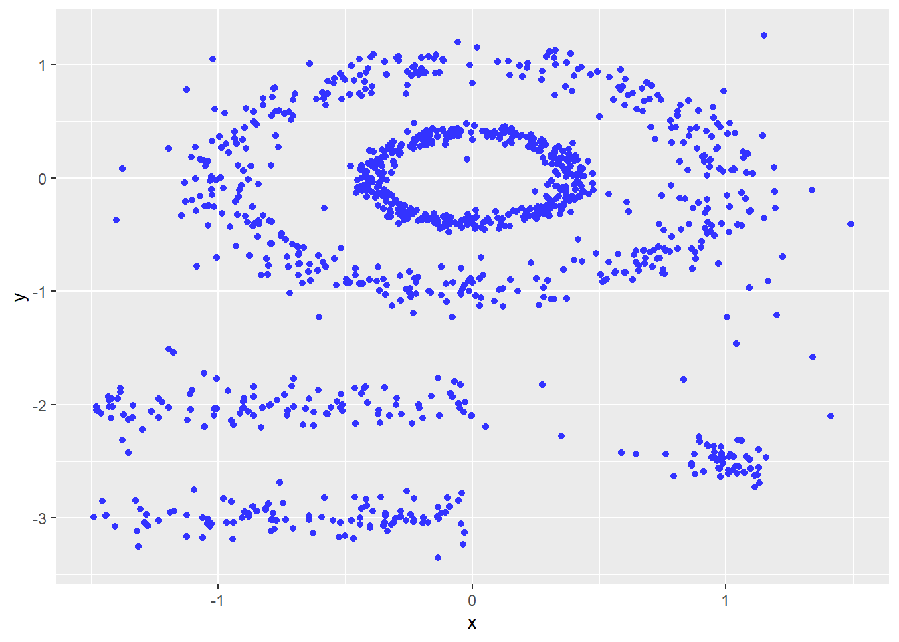
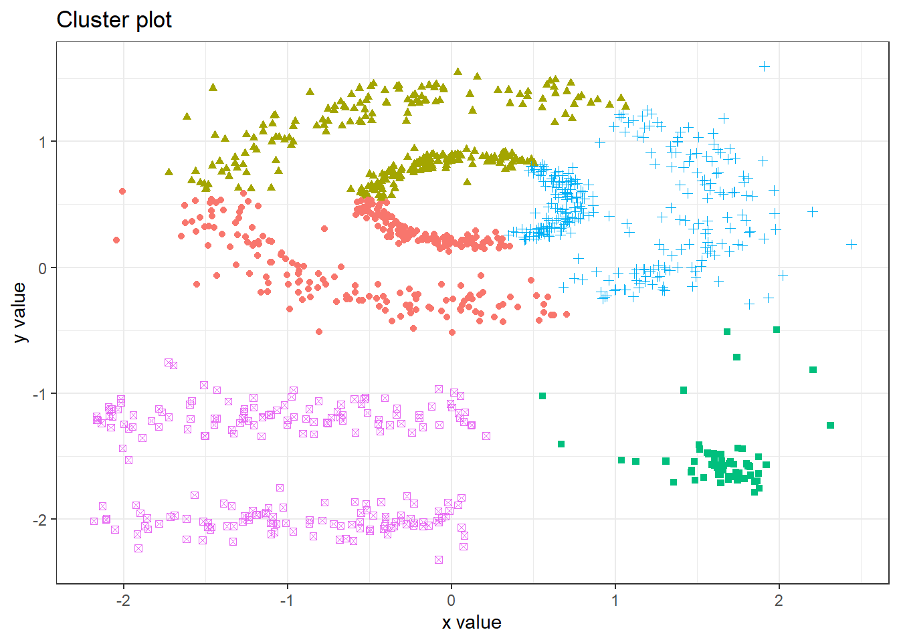
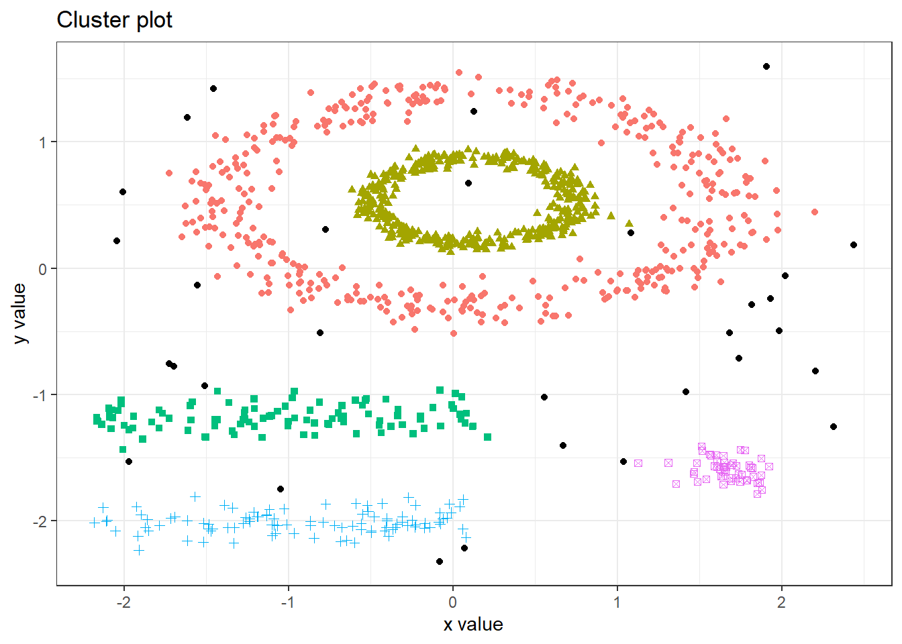
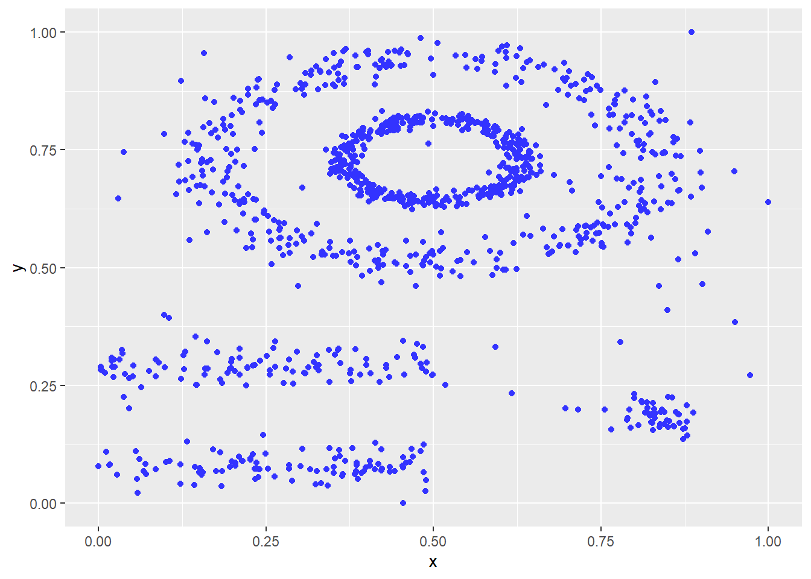
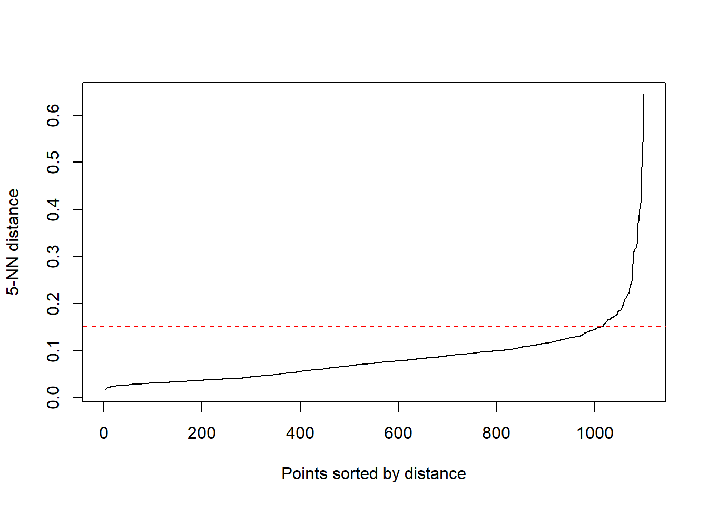

# Cargamos las librerias necesarias
library(cluster)
library(fpc)
library(pracma)
library(factoextra)
library(dbscan)DBSCAN i OPTICS
1 Descripció del problema
### Generamos una semilla para poder ejecutar los datos
set.seed(04102022)### Creamos la base de datos que vamos a utilizar para detectar los grupos
data("multishapes")
datos <- multishapes[, 1:2]
### Printamos la imagen que hemos obtenido de los datos a clasificar
ggplot2::ggplot(datos, aes(x = x, y = y)) +
ggplot2::geom_point(color='#3333FF')
1.0.1 KMeans
Graficamos los datos a través de un k-means para visualizar como quedarian los grupos cuando utilizamos unos algoritmos de agrupación a partir de la inercia.
km_clusters <- kmeans(x = datos, centers = 5, nstart = 50)
fviz_cluster(object = km_clusters, data = datos, geom = "point", ellipse = FALSE,
show.clust.cent = FALSE, pallete = "jco") +
theme_bw() +
theme(legend.position = "none")
Como podemos ver, Kmeans ha hecho una muy mala clusterización, puesto que:
No ha conseguido clusterizar según las formas complejas del modelo.
No ha tenido en cuenta que existen outliers, incluyendolos en los distintos clusters
1.0.2 DBSCAN
DBSCAN parte de dos parámetros que son:
eps: distancia máxima a la que debe haber otra observación para ser considerar que cumple con el criterio de “estar cerca”
minPts: paámetro que controla la densidad mínima requerida para que un punto sea considerado un núcleo y se incluya en un grupo/cluster.
Para un punto \(p\), si existen al menos minPts puntos dentro del radio eps alrededor de \(p\), entonces \(p\) se considera un núcleo (core point) y se incluye en el mismo grupo/clúster que los demás puntos dentro del radio eps.
Si no hay suficientes puntos dentro del radio eps, \(p\) se considera un punto frontera (border point) y se incluye en el mismo grupo/clúster que su punto núcleo más cercano.
Si no hay ningún punto dentro del radio eps, \(p\) se considera un punto de ruido (noise point) y no se incluye en ningún grupo/cluster.
Aplicamos el algoritmo de dbscan para classificar los datos.
dbscan_res <- dbscan::dbscan(datos, eps = 0.15, minPts = 5)Graficamos el dbscan obtenido
fviz_cluster(object = dbscan_res, data = datos, geom = "point", ellipse = FALSE,
show.clust.cent = FALSE, pallete = "jco") +
theme_bw() +
theme(legend.position = "none")
Para escoger los valores de eps i minPts, necesitaremos optimizar el proceso. Para ello, realizaremos la siguiente técnica de optimización.
2 Cálculo de min_pts
El parámetro min_pts establece el número de puntos mínimo que, dado un radio eps, tiene que haber para que se considere que dichos puntos forman un cluster.
Un valor bajo de min_pts asegurará que mas puntos son agrupados, pero se corre el riesgo de agrupar outliers. Por el contrario, un valor muy alto de min_pts puede descartar valores que no son anómalos.
En la literatura hablan de usar un valor entre 3 y 5 ya que funcionan bastante bien en la mayoría de los casos. minPts igual 2 cuando tenemos una distribución normal y otra nube de outliers
Para calcularlo de manera empírica, diremos que el mínimo de puntos sea igual al 0.2% - 0.25% del total de los datos teniendo en cuenta que:
El minimo será de 2 para datos que sean muy pequeños
El máximo será de 10 para datos con mucha información o quizás
un poco más dependiendo del tamaño de la base de datos
porcentaje <- 0.0025
# Cálculo de min_pts.
min_pts <- round(nrow(datos) * porcentaje)
min_pts[1] 3# Realizamos los cortes de 2 y 10 que se mencionan anteriormente como validación
# adicional, pero lineas 98 y 99 pueden comentarse.
min_pts <- ifelse(min_pts <= 1, 2, min_pts)
min_pts <- ifelse(min_pts >= 10, 10, min_pts)
min_pts [1] 32.1 Normalización de los datos
Este proceso siempre se ha de realizar para que cualquier variable tenga el mismo peso delante del cálculo del clustering.
Cuando trabajamos con distáncias es aconsejable normalizar los datos para que ninguno tenga un peso que no le corresponde.
datos_norm <- data.frame(lapply(datos, scales::rescale))
head(datos_norm) x y
1 0.2299066 0.5427018
2 0.7855506 0.8076425
3 0.8104815 0.6681865
4 0.2470507 0.6168200
5 0.7365786 0.9038067
6 0.8465449 0.8135107ggplot2::ggplot(datos_norm, aes(x = x, y = y)) +
ggplot2::geom_point(color='#3333FF')
Como podemos ver, ahora tendremos los valores entre el intervalo [0, 1].
2.2 Calculo de la Epsilon (eps)
Realizamos el cálculo de las distancias mas cercanas en una matriz de puntos
distanciasVecinas <- dbscan::kNNdist(datos, k = min_pts)Ordenamos los puntos de menos a mayor y lo guardamos en un vector. Cuando realicemos el gráfico elbow, será nuestro eje de las Y
Y <- distanciasVecinas[order(distanciasVecinas)]Calculamos el índice del eje de la X
X <- c(0:(length(Y) - 1))A continuación calculamos las pendientes
pendientes <- c()
for (i in 1:length(X)) {
pendientes[i] <- (Y[i + 1] - Y[i])/(X[i+1] - X[i])
}
m <- which.max(pendientes)
primer <- gdata::first(which(pendientes >= m))
epsilon <- Y[primer]Nota, ejecutar lineas 131 y 132 para decidir el corte en el máximo cambio de la pendiente, como podeís apreciar ocurre alrededor de 0.15. Esto se hace trazando una recta horizontal desde el mayor cambio y viendo su valor en el eje Y.
2.3 Graficamos os epsilon ordenados
{kNNdistplot(datos, k = 5, minPts = min_pts)
abline(h = 0.15, lty = 2, col = "red")}
Mirando el gráfico elbow vemos que el epsilon es 0.15.
Volvemos a ejecutar el DBSCAN con los parámetros óptimos.
res <- dbscan(datos, eps = epsilon, minPts = min_pts) 2.4 Bibliografia
Beautiful dendrogram visualizations in r: 5+ must known methods - unsupervised machine learning - easy guides - wiki - sthda. (s.f.). Recuperado 11 de enero de 2025, de https://www.sthda.com/english/wiki/beautiful-dendrogram-visualizations-in-r-5-must-known-methods-unsupervised-machine-learning?title=beautiful-dendrogram-visualizations-in-r-5-must-known-methods-unsupervised-machine-learning
Dendrograms. (s.f.). Recuperado 11 de enero de 2025, de https://plotly.com/ggplot2/dendrogram/
Introduction. (s.f.). [Software]. Recuperado 11 de enero de 2025, de https://cran.r-project.org/web/packages/dendextend/vignettes/dendextend.html
RPubs—Clustering de series temporales a traves de metodos no parametricos. (s.f.). Recuperado 11 de enero de 2025, de https://rpubs.com/Edison-D/615477
RPubs—Dinamyc time warping. (s.f.). Recuperado 11 de enero de 2025, de https://rpubs.com/sebas_Alf/684217
Sardá, A. (2024). Asardaes/dtwclust [R]. https://github.com/asardaes/dtwclust (Obra original publicada en 2015)
Aquesta web està creada por Dante Conti y Sergi Ramírez, (c) 2024